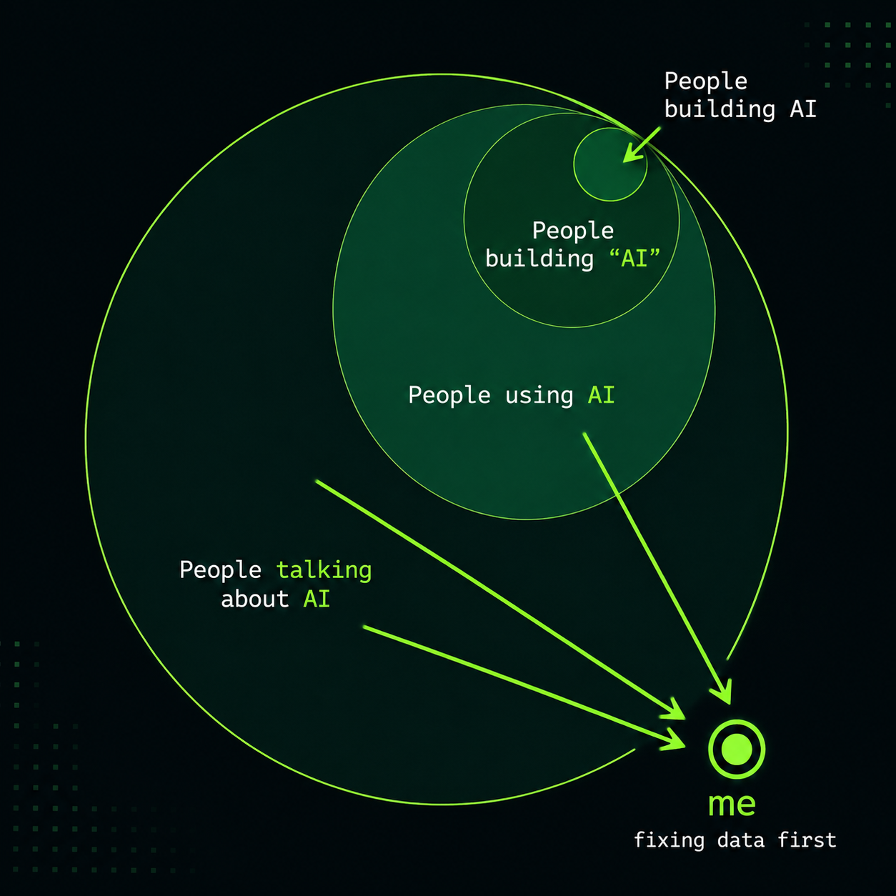
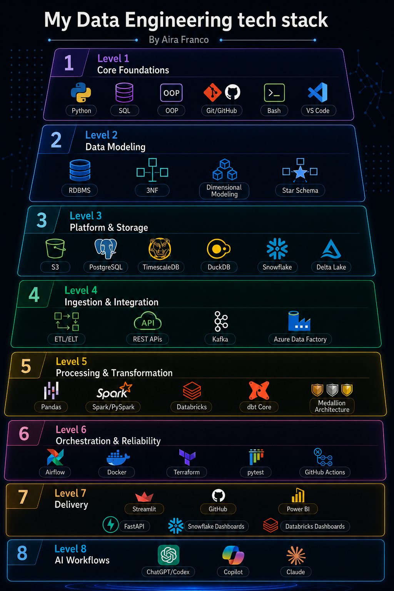
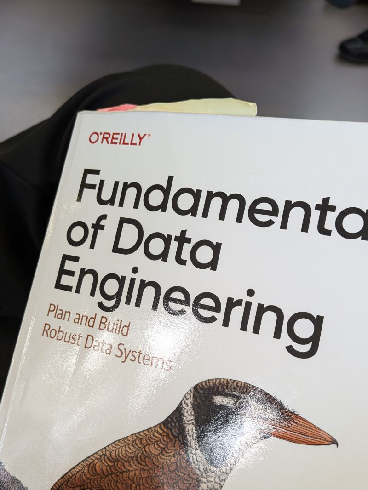
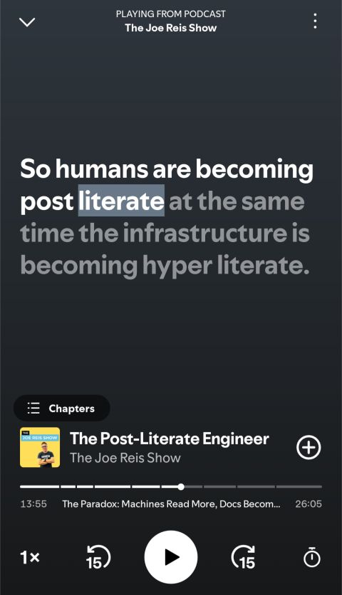

Data Engineering
Stockholms Tekniska Institut
Stockholm, Sweden
Sep 2025 — May 2027
YH Programme
Data Engineer
A data engineer who enjoys working behind the scenes to make complex data processes run smoothly. What I enjoy most is seeing messy data become something useful that people can trust.
I have practical experience architecting end-to-end data pipelines and platforms that transform raw data into reliable, tested, analytics-ready data. I have also worked with pipeline design, data modelling, and scalable solutions that support business decisions. I adapt quickly to new tools, environments, and domain-specific data ecosystems.
Before moving into data engineering, I worked in hospitality, high-volume retail operations, and English-language teaching. Those roles strengthened my customer focus, communication, adaptability, and attention to detail—from creating welcoming experiences and tailoring lessons to individual learners to maintaining accuracy in fast-moving operational workflows.
I am naturally operations-minded and find satisfaction in creating workflows that produce clear, dependable results. I now bring that same mindset to data engineering—building trustworthy, well-structured data foundations that support better decisions and make analytics and AI systems more reliable.
Résumé
Stockholms Tekniska Institut
Stockholm, Sweden
Sep 2025 — May 2027
YH Programme
Hokusei Gakuen University
Sapporo, Japan
Apr 2015 — Mar 2017
Associate's Degree
Select a role to view its responsibilities and skills.
Japan International Cooperation Agency (JICA) · Disaster and Humanitarian Relief
Fairtrade International · Economic Empowerment
A multilingual profile connecting communication, culture, and growth.
The person behind the pipelines
Curious and resilient.
I know what it means to be afraid and lost, but I possess the bravery to push through challenges, take calculated risks, be patient and start over when it counts.
Growing up between the Philippines and Japan, and later building a new life in Sweden, this huge life moves taught me how to adapt, rebuild connections, learn new languages, and keep moving forward even when the path is uncertain.
Today, I am an aspiring data engineer and a mother of two. I'm pursuing my long-held dream of working in tech, especially in data.
What defines me is not that every step has been easy, but that I continue to show up. I am willing to begin as a beginner, ask questions, learn from setbacks, and put in the work required to improve.
That persistence now drives my ambition to build reliable data foundations for analytics and AI. I bring resilience, curiosity, attention to detail, and a genuine interest in people to every challenge I take on.
📍 Based in Stockholm
The data engineering ecosystem evolves incredibly fast, with new tools, platforms, and frameworks appearing all the time. 🚀
But I believe strong data engineers should understand the foundations first: the operational and technical architectures, and the whys and hows behind how data is collected, stored, modelled, transformed, tested, and delivered at different scales.
I enjoy being the person behind the scenes—the quiet superhero making sure applications, analytics, and machine learning models receive reliable, well-structured, and usable data. 🦸♀️
AI may get the spotlight, but good data engineering is what keeps everything running in the background.

This roadmap maps the engineering concepts, practices, and workflows I’ve developed through my Data Engineering studies and projects.

Selected work
This page brings together my writing and Data Engineering coursework.
Explore the capstone projects completed during my Data Engineering programme. Each card opens the full project article.
Designed a normalized PostgreSQL database from vocational-school business requirements and ran it in Docker.
Read project article Data AnalysisExplored Sakila rental data with SQL, DuckDB, Python, and Evidence to identify customer, movie, and revenue patterns.
Read project article Data StreamingDocumented hands-on learning with Kafka brokers, topics, producers, and consumers inside a Docker environment.
Read project article Data PlatformBuilt a batch-oriented retail inventory platform that processes inventory and sales events through APIs, ETL, and Kafka.
Read project article DataOpsBuilt a validated ETL pipeline that separates accepted and rejected records before loading them into PostgreSQL.
Read project article Data ArchitectureReworked Netflix analytics around a star schema and reflected on semantic modelling and core data-engineering principles.
Read project article Data VisualizationBuilt an interactive Streamlit dashboard that transforms Netflix ranking data into structured, user-friendly analytics.
Read project article Lakehouse PlatformBuilt a Databricks lakehouse through Bronze, Silver, and Gold layers to learn and apply Medallion Architecture.
Read project articleMy Personal Take on AI


AI has fundamentally changed how I work and learn as a data engineer. I use it to explore ideas, write and review code, troubleshoot problems, and move faster—but I don't want speed to come at the cost of understanding.
One idea that strongly resonates with me is that generation is becoming cheap, while judgment is becoming scarce. AI can generate a pipeline, a data model, SQL, infrastructure, or an architecture in seconds. But producing something isn't the same as understanding why it was designed that way, what trade-offs were made, how it might fail, or whether it was the right solution in the first place.
That's why I think fundamentals matter even more in an AI-assisted engineering world.
I want to understand the systems underneath the abstractions: data modeling, distributed systems, databases, orchestration, architecture, reliability, and the reasoning behind engineering decisions. AI can help me build faster, but I still want to be able to challenge its output and take responsibility for what I ship.
For me, the goal isn't to become better at generating more code. It's to become better at knowing what should be built, why it should be built that way, and whether what was generated is actually good engineering.
That's also why I'm making a deliberate effort to keep learning from experienced engineers—through books, technical writing, podcasts, and building systems myself.
AI is leverage. Understanding is still the foundation.